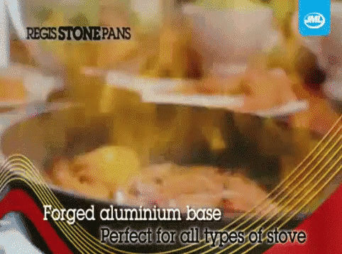

Michael Bay

Description
Low on (cooking) talent? Ever wondered why your fellow chefs try a variety of cuisines? Do you wish to please your company heads who know so much about imagination?
We bring you The Michael Bay. Easy on ingredients and high on returns. At least initially. Just follow along and repeat the steps over and over until people catch on.
Ingredients
- Explosions
- Extremely Jacked Alpha Male
- Hot models with bewwbs
- Motive to “Save The World”
- Secondary comedic character(Preferably a stereotype)
- Oversaturated Teal and Orange shots
- Lens Flares
- Shots of the American Flag
- Optional background music
Steps
- Beginner chef? Lucky for you this recipe doesn’t need a P*L*OT
- Would you want to add relatable characters at this point, nah son, add some stone faced ultra straight guys shooting at stuff because who wants to see real life struggles.
- Allergic to meat head characters substitute the previous with hot garbage CGI Machines
- Explosion
- Running
- Explosion
- Punching
- Explosion
- Guns
- EXPLOSIONNN(s)!!!
- Add a big shot of the American Flag
- Another “BIG SHOT OF THE AMERICAN FLAG”.. actually add a whole bunch of them
- Time for a down low spinning around hero shot
- Your dish is almost ready at this step.
- Oh no, your dish is about to be over cooked. You need to do a Sllllooooowwwwmmmmmoooooo dive to the gas knob before the whole nation.. erm.. dish.. self destructs
- Garnish with this those oversaturated tones
- You can serve this dish about five times before your guests realize you’ve been serving the same dish over and over again.
Refernces
Return to Homepage